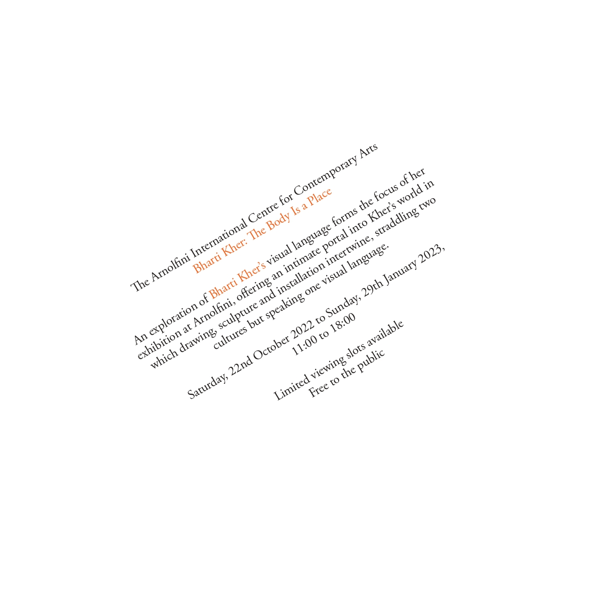

Typography

Axial
Elements are set to either the left or the right of a single axis.
Bilateral
Elements will be arranged symmetrically on one single axis.

Dilatational
Elements expand from the centre point in a circular motion.

Grid
Elements follow a system of vertical and horizontal divisions.
Modular
Elements stick to a repeatable structure.
Radial
Elements extend out from a certain point.

Random
Elements have no specific pattern.
Transitional
Elements flow in a natural way, this usually will appear unorganised.